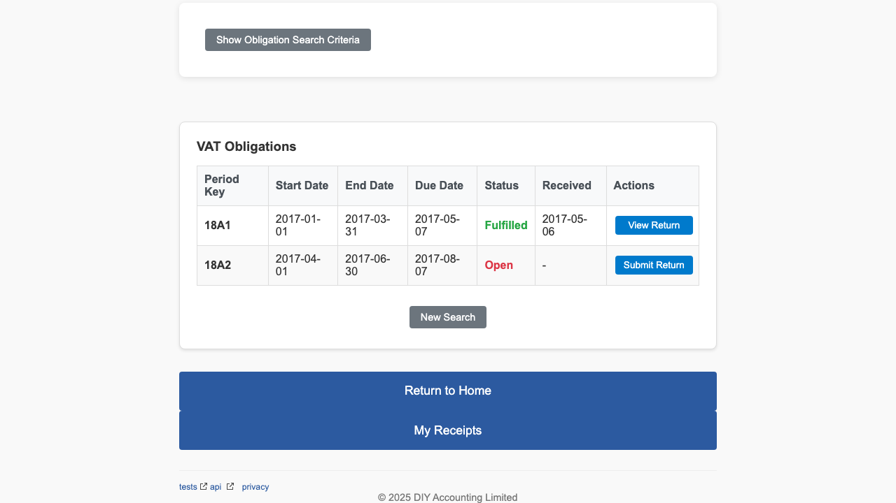
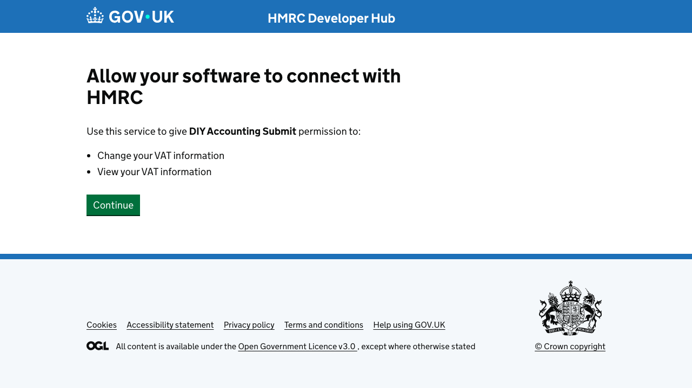
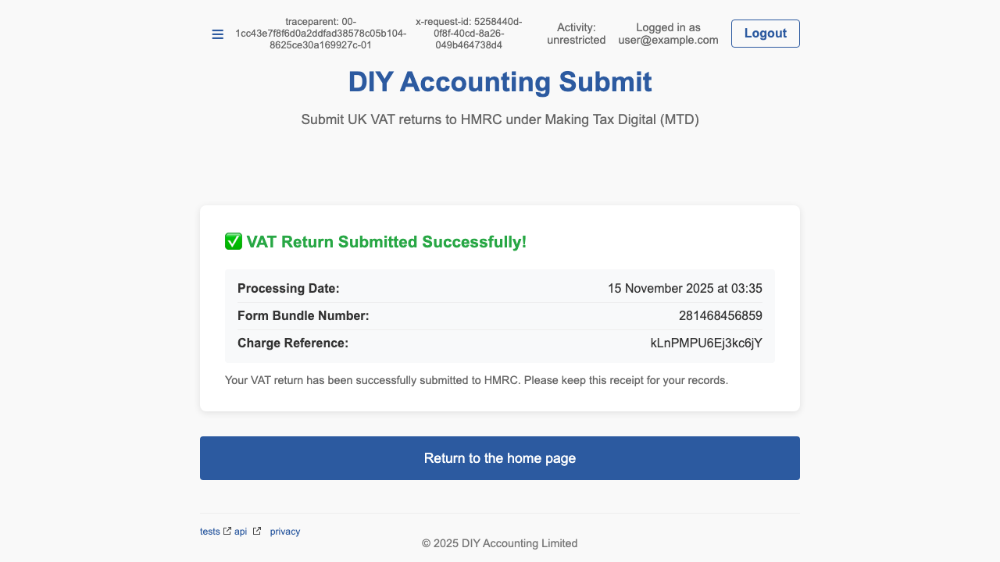
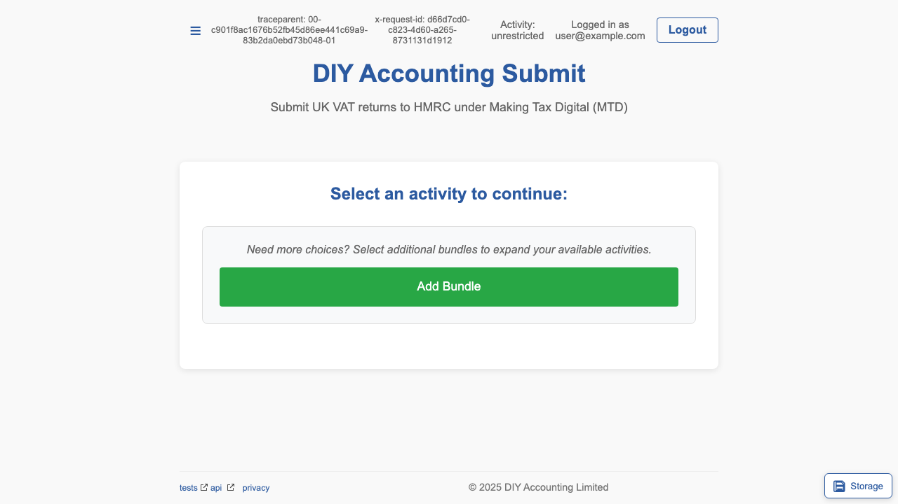
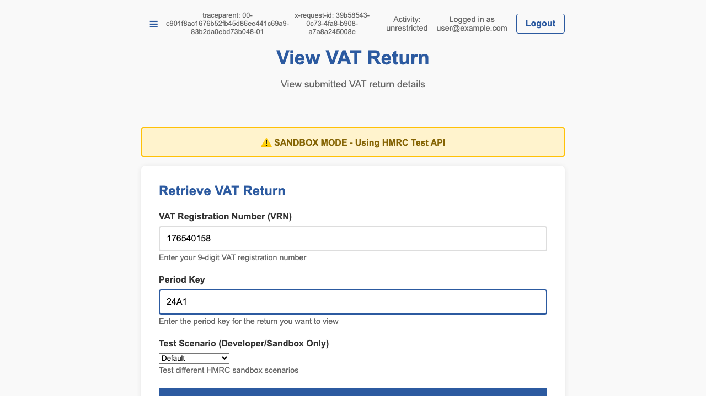
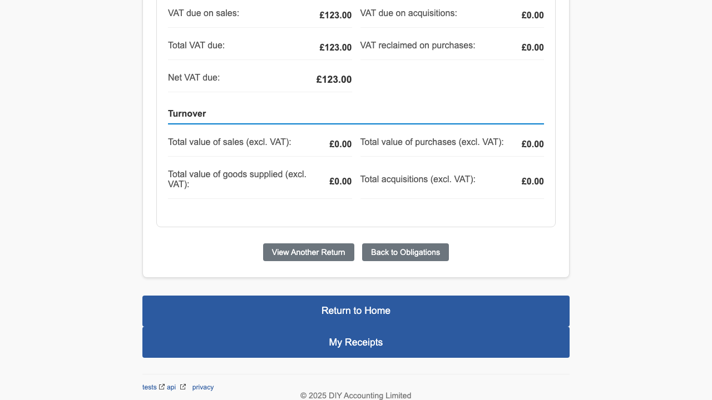

This guide provides step-by-step instructions with screenshots on how to use DIY Accounting Submit.
HMRC: View VAT Obligations

Enter VRN and date range; choose status (e.g., O for Open, F for Fulfilled).

Results show due and received dates, period keys and statuses.
HMRC: Submit a VAT Return

Fill in VAT return boxes (1–9), period key, and mark Finalised when ready.

Allow the app to submit on your behalf for this session.

On success you get a HMRC bundle reference and processing date.

Optionally verify by retrieving the submitted return.
HMRC: View a VAT Return

Enter VRN and period key to retrieve a submitted return.

In sandbox, developer scenarios can simulate outcomes.

View Box totals and declaration details returned by HMRC.